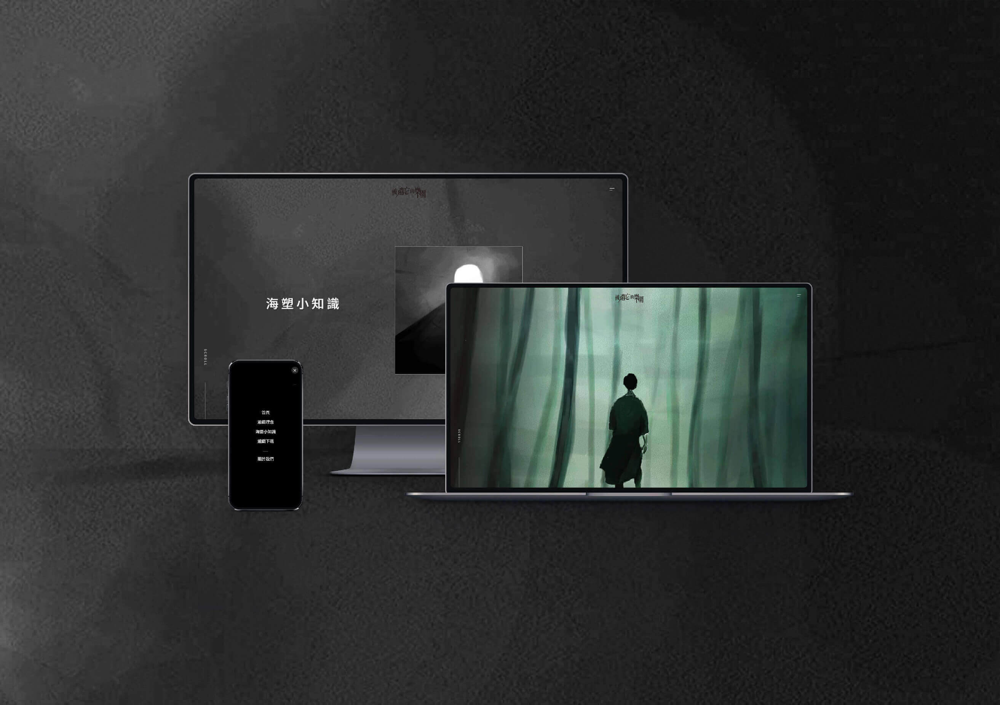
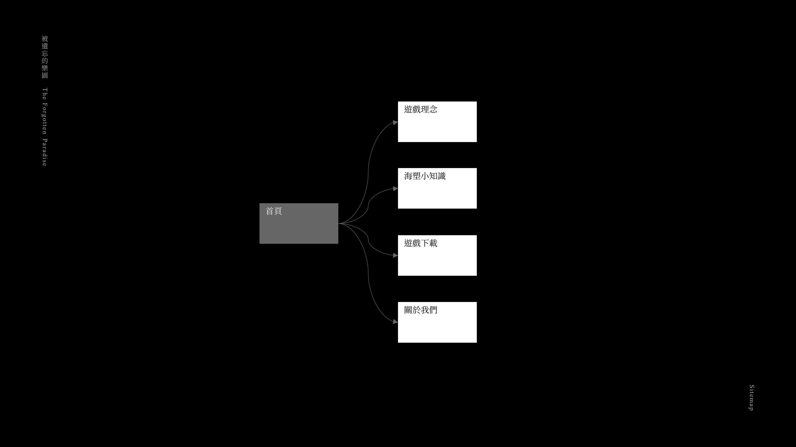

被遺忘的樂園
Web & Game Development｜Sep 2018 - May 2019
《被遺忘的樂園》是一款2D橫向冒險遊戲，透過劇情化的方式呈現海洋塑膠汙染帶來的問題。跳脫傳統媒材的框架，期望以嶄新的方式喚起更多人對海洋環境保護的認知，並設有遊戲官方網站傳達海廢議題的重要性、相關知識與現況。
角色遊戲工程師、網頁工程師
能力Unity、C#、Illustrator、Adobe XD、HTML、CSS、JavaScript、jQuery、RWD

專案歷程
整個遊戲和網站建置完成，共歷時將近1年的時間。期間，我們不斷嘗試與挑戰，透過腦力激盪激發新想法，期望帶給使用者更好的體驗。

遊戲實作
此階段是遊戲能否成功產出的關鍵。在軟體選擇上，我們採用Unity作為實作平台，因為它能最好的呈現我們的遊戲內容與互動效果。

Unity平台製作過程

遊戲部分畫面
網站建置
網站作為遊戲的輔助，主要提供更詳盡的海廢相關知識，以及遊戲中的彩蛋解說。希望藉此能夠解答玩家在遊戲時的疑問，並在觀看後能更深入的理解議題。

網站架構
實際頁面展示
展覽與榮譽
2019年05月 交大傳科系108級畢業成果展
2019年11月 台灣教育傳播暨科技學會年會@NCTU國際學術研討會 榮獲數位媒體競賽第二名
相關連結
>> 《被遺忘的樂園》官方網站（提供遊戲下載）
>> 《被遺忘的樂園》臉書粉絲專頁
>> 《被遺忘的樂園》遊戲預告影片